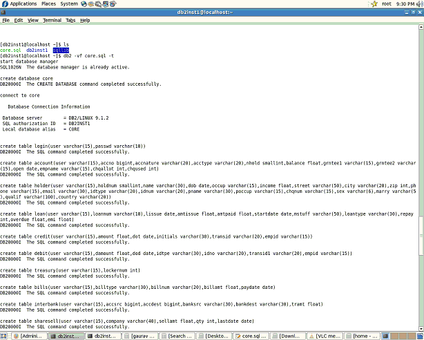
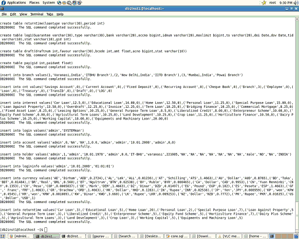
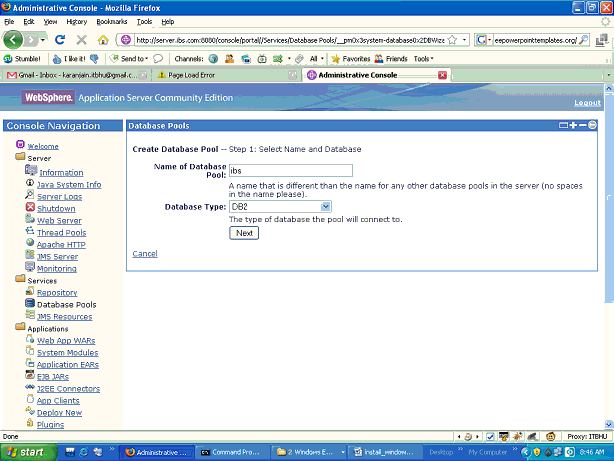
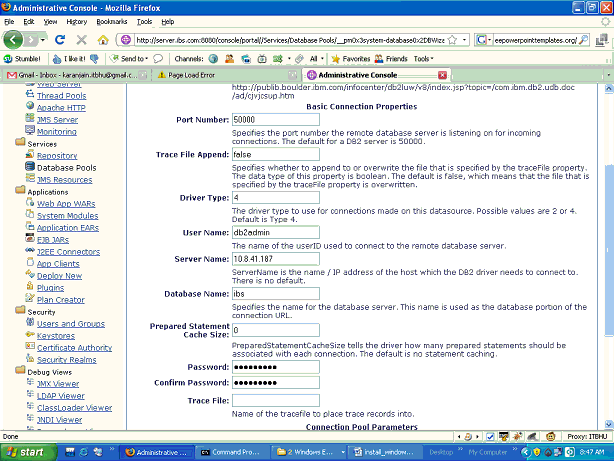
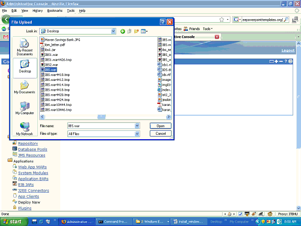
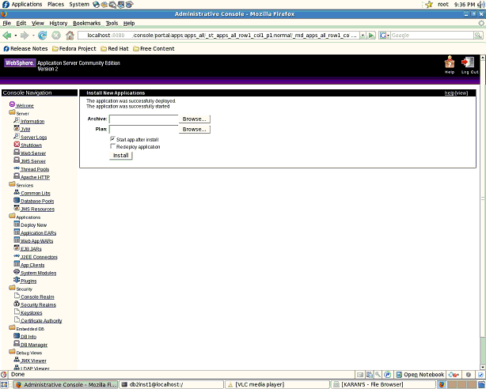

1. Install the Web Sphere Application Server and DB2 and then start both of
them . Make sure that
HTTPS service is running on port 8443 . ( For running on any other port , follow the instructions
given at the end of this page *)
2. Log on to the DB2 user-id ( here we have assumed the DB2 user-id as: db2inst1 ).
3. Type the command : <db2 -vf clp4demo.sql -t > on the
db2 command line. The clp4demo.sql file
is kept in Project/Product/LINUX folder


4. Create database pool with the name "ibs " .


5. Deploy ibs.war on the server. The file ibs.war is kept in Project/Product/LINUX/WAR folder


* NOTE :
In case HTTPS service is not running on port 8443 then traverse to the web application folder (
default location is
/opt/IBM/WebSphere/AppServerCommunityEdition/repository/default/IBS/1.0/IBS-1.0.car/ ) and
open the file index.jsp in a text editor . Below is a screenshot of the same.
Replace the highlighted port number with your desired port on which HTTPS service is running on
your system .